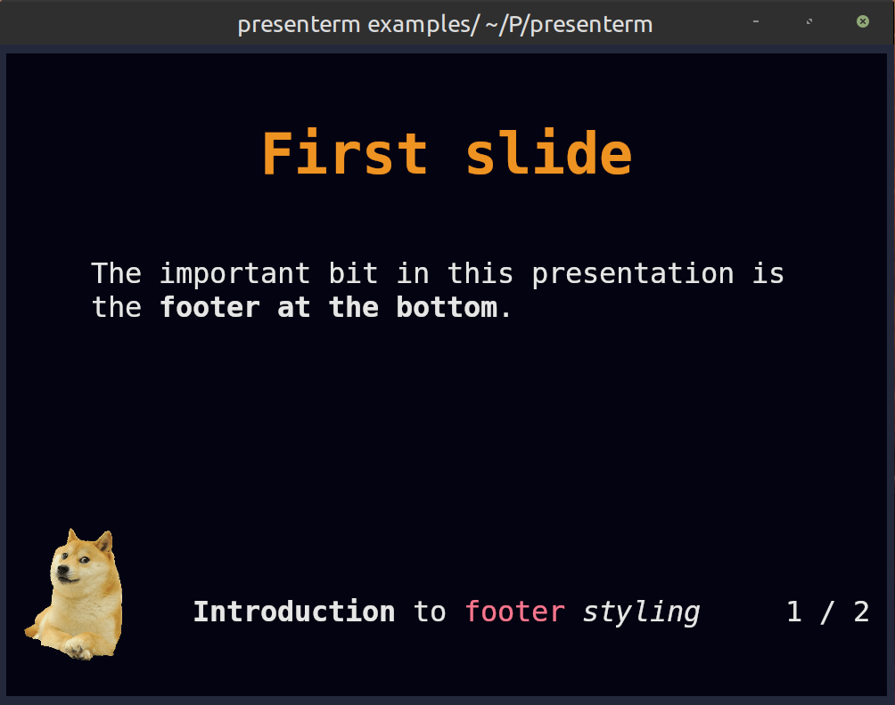

Theme definition
This section goes through the structure of the theme files. Have a look at some of the existing themes to have an idea of how to structure themes.
Root elements
The root attributes on the theme yaml files specify either:
- A specific type of element in the input markdown or rendered presentation. That is, the slide title, headings, footer, etc.
- A default to be applied as a fallback if no specific style is specified for a particular element.
Alignment
presenterm uses the notion of alignment, just like you would have in a GUI editor, to align text to the left, center, or right. You probably want most elements to be aligned left, some to be aligned on the center, and probably none to the right (but hey, you're free to do so!).
The following elements support alignment:
- Code blocks.
- Slide titles.
- The title, subtitle, and author elements in the intro slide.
- Tables.
Left/right alignment
Left and right alignments take a margin property which specifies the number of columns to keep between the text and the left/right terminal screen borders.
The margin can be specified in two ways:
Fixed
A specific number of characters regardless of the terminal size.
alignment: left
margin:
fixed: 5
Percent
A percentage over the total number of columns in the terminal.
alignment: left
margin:
percent: 8
Percent alignment tends to look a bit nicer as it won't change the presentation's look as much when the terminal size changes.
Center alignment
Center alignment has 2 properties:
minimum_sizewhich specifies the minimum size you want that element to have. This is normally useful for code blocks as they have a predefined background which you likely want to extend slightly beyond the end of the code on the right.minimum_marginwhich specifies the minimum margin you want, using the same structure asmarginfor left/right alignment. This doesn't play very well withminimum_sizebut in isolation it specifies the minimum number of columns you want to the left and right of your text.
Colors
Every element can have its own background/foreground color using hex notation:
default:
colors:
foreground: "ff0000"
background: "00ff00"
Default style
The default style specifies:
- The margin to be applied to all slides.
- The colors to be used for all text.
default:
margin:
percent: 8
colors:
foreground: "e6e6e6"
background: "040312"
Intro slide
The introductory slide will be rendered if you specify a title, subtitle, or author in the presentation's front matter. This lets you have a less markdown-looking introductory slide that stands out so that it doesn't end up looking too monotonous:
---
title: Presenting from my terminal
sub_title: Like it's 1990
author: John Doe
---
The theme can specify:
- For the title and subtitle, the alignment and colors.
- For the author, the alignment, colors, and positioning (
page_bottomandbelow_title). The first one will push it to the bottom of the screen while the second one will put it right below the title (or subtitle if there is one)
For example:
intro_slide:
title:
alignment: left
margin:
percent: 8
author:
colors:
foreground: black
positioning: below_title
Footer
The footer currently comes in 3 flavors:
Template footers
A template footer lets you put text on the left, center and/or right of the screen. The template strings
can reference {current_slide} and {total_slides} which will be replaced with the current and total number of slides.
Besides those special variables, any of the attributes defined in the front matter can also be used:
title.sub_title.event.location.date.author.
Strings used in template footers can contain arbitrary markdown, including span tags that let you use colored text. A
height attribute allows specifying how tall, in terminal rows, the footer is. The text in the footer will always be
placed at the center of the footer area. The default footer height is 2.
footer:
style: template
left: "My **name** is {author}"
center: "_@myhandle_"
right: "{current_slide} / {total_slides}"
height: 3
Do note that:
- Only existing attributes in the front matter can be referenced. That is, if you use
{date}but thedateisn't set, an error will be shown. - Similarly, referencing unsupported variables (e.g.
{potato}) will cause an error to be displayed. If you'd like the{}characters to be used in contexts where you don't want to reference a variable, you will need to escape them by using another brace. e.g.{{potato}} farmswill be displayed as{potato} farms.
Footer images
Besides text, images can also be used in the left/center/right positions. This can be done by specifying an image key
under each of those attributes:
footer:
style: template
left:
image: potato.png
center:
image: banana.png
right:
image: apple.png
# The height of the footer to adjust image sizes
height: 5
Images will be looked up:
- First, relative to the presentation file just like any other image.
- If the image is not found, it will be looked up relative to the themes directory. e.g.
~/.config/presenterm/themes. This allows you to define a custom theme in your themes directory that points to a local image within that same location.
Images will preserve their aspect ratio and expand vertically to take up as many terminal rows as footer.height
specifies. This parameter should be adjusted accordingly if taller-than-wider images are used in a footer.
See the footer example as a showcase of how a footer can contain images and colored text.

Progress bar footers
A progress bar that will advance as you move in your presentation. This will by default use a block-looking character to draw the progress bar but you can customize it:
footer:
style: progress_bar
# Optional!
character: 🚀
None
No footer at all!
footer:
style: empty
Slide title
Slide titles, as specified by using a setext header, has the following properties:
padding_topwhich specifies the number of rows you want as padding before the text.padding_bottomwhich specifies the number of rows you want as padding after the text.separatorwhich specifies whether you want a horizontal ruler after the text (and thepadding_bottom):
slide_title:
padding_bottom: 1
padding_top: 1
separator: true
Headings
Every header type (h1 through h6) can have its own style composed of:
- The prefix you want to use.
- The colors, just like any other element:
headings:
h1:
prefix: "██"
colors:
foreground: "rgb_(48,133,195)"
h2:
prefix: "▓▓▓"
colors:
foreground: "rgb_(168,223,142)"
Code blocks
The syntax highlighting for code blocks is done via the syntect crate. The list of all the supported built-in syntect themes is the following:
- base16-ocean.dark
- base16-eighties.dark
- base16-mocha.dark
- base16-ocean.light
- InspiredGitHub
- Solarized (dark)
- Solarized (light)
Besides those and thanks to the work done on the awesome bat tool, presenterm has
access to not only the built-in syntect's built-in themes but also the ones in bat. Run bat --list-themes to see a
list of all of them.
Code blocks can also have an optional vertical and horizontal padding so your code is not too close to its bounding rectangle:
code:
theme_name: base16-eighties.dark
padding:
horizontal: 2
vertical: 1
Custom highlighting themes
Besides the built-in highlighting themes, you can drop any .tmTheme theme in the themes/highlighting directory under
your configuration directory (e.g. ~/.config/presenterm/themes/highlighting in
Linux) and they will be loaded automatically when presenterm starts.
Block quotes
For block quotes you can specify a string to use as a prefix in every line of quoted text:
block_quote:
prefix: "▍ "
Mermaid
The mermaid graphs can be customized using the following parameters:
mermaid.backgroundthe background color passed to the CLI (e.g.,transparent,red,#F0F0F0).mermaid.themethe mermaid theme to use.
mermaid:
background: transparent
theme: dark
Alerts
GitHub style markdown alerts can be styled by setting the alert key:
alert:
# the base colors used in all text in an alert
base_colors:
foreground: red
background: black
# the prefix used in every line in the alert
prefix: "▍ "
# the style for each alert type
styles:
note:
color: blue
title: Note
icon: I
tip:
color: green
title: Tip
icon: T
important:
color: cyan
title: Important
icon: I
warning:
color: orange
title: Warning
icon: W
caution:
color: red
title: Caution
icon: C
Extending themes
Custom themes can extend other custom or built in themes. This means it will inherit all the properties of the theme being extended by default.
For example:
extends: dark
default:
colors:
background: "000000"
This theme extends the built in dark theme and overrides the background color. This is useful if you find yourself almost liking a built in theme but there's only some properties you don't like.
Color palette
Every theme can define a color palette, which includes a list of pre-defined colors and a list of background/foreground
pairs called "classes". Colors and classes can be used when styling text via <span> HTML tags, whereas colors can also
be used inside themes to avoid duplicating the same colors all over the theme definition.
A palette can de defined as follows:
palette:
colors:
red: "f78ca2"
purple: "986ee2"
classes:
foo:
foreground: "ff0000"
background: "00ff00"
Any palette color can be referenced using either palette:<name> or p:<name>. This means now any part of the theme
can use p:red and p:purple where a color is required.
Similarly, these colors can be used in span tags like:
<span style="color: palette:red">this is red</span>
<span class="foo">this is foo-colored</span>
These colors can used anywhere in your presentation as well as in other places such as in template footers and introduction slides.